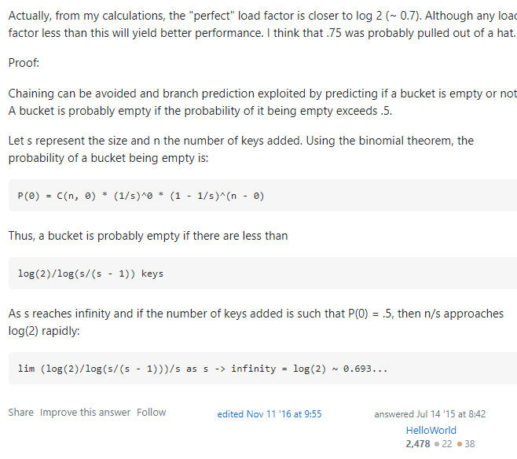

HashMap也算是开发中的一大常客，本文主要基于jdk8先后来深入了解HashMap的部分源码
HashMap 类从属关系
首先看类定义
public class HashMap<K,V> extends AbstractMap<K,V>
implements Map<K,V>, Cloneable, Serializable {
}可以看到HashMap继承了AbstractMap，同时还实现了Map，Cloneable，Serializable
但我们可以看到AbstractMap也已经实现了Map，那为什么HashMap在继承了AbstractMap之后要多此一举实现Map呢
public abstract class AbstractMap<K,V> implements Map<K,V> {}搜索了一波，原因竟是！据java集合框架的创始人Josh Bloch描述，这样的写法是一个失误。在java集合框架中，类似这样的写法很多。
Stack overflow上面也进行过提问https://stackoverflow.com/questions/2165204/why-does-linkedhashsete-extend-hashsete-and-implement-sete
HashMap结构
HashMap是一个哈希表，底层结构主要是由数组（哈希桶）+链表实现的，每一个哈希桶里放的都是链表。从jdk8之后，每当链表长度达到8之后，就会自动把链表转化成红黑树。
大概是这样：
红黑树是一种自平衡的二叉查找树，除了满足二叉查找树的性质外，还需要满足如下五个条件:（这里就不做过多的介绍）
- 节点是红色或黑色
- 根节点为黑色
- 所有叶子节点都是黑色
- 每个红色节点都必须有两个黑色的子节点
- 从任一节点到叶子节点的所有路径都包含相同数目的黑色节点
为什么要用红黑树呢？为了增加查询效率可以理解不能单纯用链表，为什么不是AVL树呢
AVL树和红黑树都可以在O(log n)时间复杂度下完成查找操作。但是因为AVL是严格平衡的，在AVL树中，从根到任何叶子的最短路径和最长路径之间的差异最多为1。在红黑树中，差异可以是2倍。AVL树相较于红黑树有着更好的查找效率
但是在插入、删除节点的时候，AVL树操作有更多的旋转次数，以至于插入，删除的效率低下。因为平衡AVL树可能需要O（log n）旋转，而红黑树将需要最多两次旋转使其达到平衡
也就是说，在进行查找较多的任务下，使用AVL树；在进行插入删除较多的任务下，使用红黑树
static class Node<K,V> implements Map.Entry<K,V> {
final int hash;
final K key;
V value;
Node<K,V> next;
}类成员：
transient Node<K,V>[] table;
transient Set<Map.Entry<K,V>> entrySet;
transient int size;
transient int modCount;
int threshold;
final float loadFactor;HashMap初始化
HashMap根据参数有无initialCapacity和loadfactor进行不同的初始化
initialCapacity是初始容量。loadFactor是扩容时候会用到的加载因子，达到capacity*loadFactor时需要扩容
// 有initialCapacity和loadfloat，进行了一系列的校对工作
public HashMap(int initialCapacity, float loadFactor) {
if (initialCapacity < 0)
throw new IllegalArgumentException("Illegal initial capacity: " +
initialCapacity);
if (initialCapacity > MAXIMUM_CAPACITY)
initialCapacity = MAXIMUM_CAPACITY;
if (loadFactor <= 0 || Float.isNaN(loadFactor))
throw new IllegalArgumentException("Illegal load factor: " +
loadFactor);
this.loadFactor = loadFactor;
this.threshold = tableSizeFor(initialCapacity);
}
// 只有initialCapacity时，传入上一个构造函数，使用默认的loadFactor=0.75
// static final float DEFAULT_LOAD_FACTOR = 0.75f;
public HashMap(int initialCapacity) {
this(initialCapacity, DEFAULT_LOAD_FACTOR);
}
//啥也不传，都用默认
public HashMap() {
this.loadFactor = DEFAULT_LOAD_FACTOR; // all other fields defaulted
}用已有的Map进行构造
public HashMap(Map<? extends K, ? extends V> m) {
this.loadFactor = DEFAULT_LOAD_FACTOR;
putMapEntries(m, false);
}首先判断容量大小够不够，需要扩容与否，然后进行挨个插入。还是很容易理解的
final void putMapEntries(Map<? extends K, ? extends V> m, boolean evict) {
int s = m.size();
if (s > 0) {
if (table == null) { // pre-size
float ft = ((float)s / loadFactor) + 1.0F;// s/loadFactor+1和capacity进行比较
int t = ((ft < (float)MAXIMUM_CAPACITY) ?
(int)ft : MAXIMUM_CAPACITY);
if (t > threshold)
threshold = tableSizeFor(t);// 获取最接近的阈值
}
else if (s > threshold)
resize();
//到这里时扩容的判断，后面的部分会介绍具体的含义
for (Map.Entry<? extends K, ? extends V> e : m.entrySet()) {
K key = e.getKey();
V value = e.getValue();
putVal(hash(key), key, value, false, evict);
}
}
}HashMap查找
public V get(Object key) {
Node<K,V> e;
return (e = getNode(hash(key), key)) == null ? null : e.value;
}final Node<K,V> getNode(int hash, Object key) {
Node<K,V>[] tab; Node<K,V> first, e; int n; K k;
if ((tab = table) != null && (n = tab.length) > 0 &&
(first = tab[(n - 1) & hash]) != null) {//校验
if (first.hash == hash && // always check first node 检查第一个node
((k = first.key) == key || (key != null && key.equals(k))))
return first;
if ((e = first.next) != null) { //赋值校验，检查后续的类型
if (first instanceof TreeNode) //如果已经是红黑树了，调用红黑树的查找
return ((TreeNode<K,V>)first).getTreeNode(hash, key);
do { //查链表
if (e.hash == hash &&
((k = e.key) == key || (key != null && key.equals(k))))
return e;
} while ((e = e.next) != null);
}
}
return null;//没找到
}containsKey其实也要查找一遍，判断与否。而不是在keySet()里找。按理来说获取到所有的key直接找应该更方便，其实不是
public boolean containsKey(Object key) {
return getNode(hash(key), key) != null;
}这是因为真正的keySet的获取是这样的：
第一次调用keySet方法时，是什么都没有的，需要调用KeySet()进行初始化，只有在第一次调用keySet方法时，才给keySet属性初始化。
而且和我们正常的印象不同的是，当获取到KeySet对象之后，也不是直接就拿到了所有的键的值。需要用迭代器进行迭代去拿到所有的key，而用户自己迭代的过程其实就是通过输入流来accept所有键。这也是为什么当我们拿到KeySet之后，我们也不能直接就输出所有的键或者直接得到个数，而必须进行.next来迭代
public Set<K> keySet() {
Set<K> ks = keySet;
if (ks == null) {
ks = new KeySet();
keySet = ks;
}
return ks;
}final class KeySet extends AbstractSet<K> {
public final int size() { return size; }
public final void clear() { HashMap.this.clear(); }
public final Iterator<K> iterator() { return new KeyIterator(); }
public final boolean contains(Object o) { return containsKey(o); }
public final boolean remove(Object key) {
return removeNode(hash(key), key, null, false, true) != null;
}
public final Spliterator<K> spliterator() {
return new KeySpliterator<>(HashMap.this, 0, -1, 0, 0);
}
//这里用了消费者类型，通过foreach输入流来挨个筛选，通过accept接受
public final void forEach(Consumer<? super K> action) {
Node<K,V>[] tab;
if (action == null)
throw new NullPointerException();
if (size > 0 && (tab = table) != null) {
int mc = modCount;
for (int i = 0; i < tab.length; ++i) {
for (Node<K,V> e = tab[i]; e != null; e = e.next)
action.accept(e.key);
}
if (modCount != mc)
throw new ConcurrentModificationException();
}
}
}但是在debug的时候其实是可以看到个数的，这个得参考debug没迭代前却获取到了keySet元素的个数
除此之外，Java8之后加入了新函数getOrDefault()，这个可以设定默认值，当找不到对应键的值的时候返回默认值。
public V getOrDefault(Object key, V defaultValue) {
Node<K,V> e;
return (e = getNode(hash(key), key)) == null ? defaultValue : e.value;
}这个刷leetcode的时候经常用到。比如说把数组中元素出现的次数记录在hashmap中
//生硬判断
public void record(String[] arr){
Map<String,Integer> map = new HashMap();
for(String str:arr){
if(map.containsKey(str)){
map.put(map.get(str)+1);
}
else map.put(str,1);
}
}
//使用getOrDefault简化步骤
public void record(String[] arr){
Map<String,Integer> map = new HashMap();
for(String str:arr){
map.put(str,map.getOrDefault(str,0)+1);
}
}HashMap插入
final V putVal(int hash, K key, V value, boolean onlyIfAbsent,
boolean evict) {
Node<K,V>[] tab; Node<K,V> p; int n, i;
if ((tab = table) == null || (n = tab.length) == 0)
n = (tab = resize()).length;
if ((p = tab[i = (n - 1) & hash]) == null)//不存在的hash地址，新建一个链表
tab[i] = newNode(hash, key, value, null);
else {
Node<K,V> e; K k;
if (p.hash == hash &&
((k = p.key) == key || (key != null && key.equals(k))))//
e = p;//相同的键
else if (p instanceof TreeNode)//如果是红黑树，就往红黑树里面加节点
e = ((TreeNode<K,V>)p).putTreeVal(this, tab, hash, key, value);
else {//如果是链表，判断是否要转红黑树
for (int binCount = 0; ; ++binCount) {
if ((e = p.next) == null) {
p.next = newNode(hash, key, value, null);
if (binCount >= TREEIFY_THRESHOLD - 1) // -1 for 1st
treeifyBin(tab, hash);//加上新加的节点超过阈值后需要转成红黑树
break;
}
if (e.hash == hash &&
((k = e.key) == key || (key != null && key.equals(k))))
break;
p = e;
}
}
if (e != null) { // existing mapping for key 重复键，只需要修改value就行了
V oldValue = e.value;
if (!onlyIfAbsent || oldValue == null)
e.value = value;
afterNodeAccess(e);
return oldValue;
}
}
++modCount;
if (++size > threshold)//判断扩容与否
resize();
afterNodeInsertion(evict);
return null;
}转成红黑树的代码：
final void treeifyBin(Node<K,V>[] tab, int hash) {
int n, index; Node<K,V> e;
if (tab == null || (n = tab.length) < MIN_TREEIFY_CAPACITY)
resize();
else if ((e = tab[index = (n - 1) & hash]) != null) {
TreeNode<K,V> hd = null, tl = null;
do {
TreeNode<K,V> p = replacementTreeNode(e, null);
if (tl == null)
hd = p;
else {
p.prev = tl;
tl.next = p;
}
tl = p;
} while ((e = e.next) != null);
if ((tab[index] = hd) != null)
hd.treeify(tab);
}
}往红黑树里加节点：
如果参数onlyIfAbsent是true，那么不会覆盖相同key的值value
如果evict是false。那么表示是在初始化时调用的
final TreeNode<K,V> putTreeVal(HashMap<K,V> map, Node<K,V>[] tab,
int h, K k, V v) {
Class<?> kc = null;
boolean searched = false;
TreeNode<K,V> root = (parent != null) ? root() : this;
for (TreeNode<K,V> p = root;;) {
int dir, ph; K pk;
if ((ph = p.hash) > h)
dir = -1;
else if (ph < h)
dir = 1;
else if ((pk = p.key) == k || (k != null && k.equals(pk)))
return p;
else if ((kc == null &&
(kc = comparableClassFor(k)) == null) ||
(dir = compareComparables(kc, k, pk)) == 0) {
if (!searched) {
TreeNode<K,V> q, ch;
searched = true;
if (((ch = p.left) != null &&
(q = ch.find(h, k, kc)) != null) ||
((ch = p.right) != null &&
(q = ch.find(h, k, kc)) != null))
return q;
}
dir = tieBreakOrder(k, pk);
}
TreeNode<K,V> xp = p;
if ((p = (dir <= 0) ? p.left : p.right) == null) {
Node<K,V> xpn = xp.next;
TreeNode<K,V> x = map.newTreeNode(h, k, v, xpn);
if (dir <= 0)
xp.left = x;
else
xp.right = x;
xp.next = x;
x.parent = x.prev = xp;
if (xpn != null)
((TreeNode<K,V>)xpn).prev = x;
moveRootToFront(tab, balanceInsertion(root, x));
return null;
}
}
}HashMap扩容与红黑树的转换
链表在程度达到8的时候变成红黑树
static final int TREEIFY_THRESHOLD = 8;而在节点数量小于6的时候再转回链表
static final int UNTREEIFY_THRESHOLD = 6;扩容条件下的最小节点数
static final int MIN_TREEIFY_CAPACITY = 64;为什么链表转化成红黑树和红黑树转化链表的阈值不一样呢？分别是8和6
假想这样一种情况：
当增加删除操作在同一个阈值附近的时候，如从8变7再变回8，可能只是很简单的两步极有可能发生的接连操作，但是却在反复调用treeifyBin和unTreeifyBin，造成了系统性能的下降
而把变回链表的阈值调更小之后，即已经小于6了，比起从7再回8，我们更有理由相信从6回8更男出现。
（我感觉这里可能是某个版本设置过相同阈值，出现了问题然后进行调优的）
链表节点数超过8就一定会转成红黑树吗？
考虑这样一种极端情况，若干哈希桶，只有一个哈希桶有链表，这个链表的节点数超过了8。此时整个hashmap里就没有多少节点，此时是不是更代表着hashmap的hash值的设计有问题呢？
所有才有了MIN_TREEFI_CAPACITY的条件，如果某一个地址的链表节点数超过了8，但是总的节点数没有到64，需要进行扩容然后重新hash
我们可以通过转红黑树的代码看出：
final void treeifyBin(Node<K,V>[] tab, int hash) {
int n, index; Node<K,V> e;
if (tab == null || (n = tab.length) < MIN_TREEIFY_CAPACITY)
//这个判断可以看出即便进了转红黑树的函数里，因为不满足最低总容量，所以转而调用resize()
resize();
else if ((e = tab[index = (n - 1) & hash]) != null) {//正常的红黑树转化过程
TreeNode<K,V> hd = null, tl = null;
do {
TreeNode<K,V> p = replacementTreeNode(e, null);
if (tl == null)
hd = p;
else {
p.prev = tl;
tl.next = p;
}
tl = p;
} while ((e = e.next) != null);
if ((tab[index] = hd) != null)
hd.treeify(tab);
}
}这里是扩容的代码：
（扩容的过程还是挺复杂的）
final Node<K,V>[] resize() {
Node<K,V>[] oldTab = table;
int oldCap = (oldTab == null) ? 0 : oldTab.length;
int oldThr = threshold; // 阈值
int newCap, newThr = 0;
if (oldCap > 0) {// 表示table已经初始化过了
if (oldCap >= MAXIMUM_CAPACITY) {// 比最大容量还大的话，就只有MAX_VALUE能顶得住了
threshold = Integer.MAX_VALUE;
return oldTab;
}
else if ((newCap = oldCap << 1) < MAXIMUM_CAPACITY &&
oldCap >= DEFAULT_INITIAL_CAPACITY)
newThr = oldThr << 1; // double threshold 新的阈值和容量都翻倍
}
else if (oldThr > 0) // initial capacity was placed in threshold
newCap = oldThr; // 这里是带capacity的初始化的时候会出现的情况
else { // zero initial threshold signifies using defaults
// 无参数初始化的时候出现的情况
newCap = DEFAULT_INITIAL_CAPACITY;
newThr = (int)(DEFAULT_LOAD_FACTOR * DEFAULT_INITIAL_CAPACITY);
}
if (newThr == 0) {
float ft = (float)newCap * loadFactor;
newThr = (newCap < MAXIMUM_CAPACITY && ft < (float)MAXIMUM_CAPACITY ?
(int)ft : Integer.MAX_VALUE);
}
threshold = newThr;
@SuppressWarnings({"rawtypes","unchecked"})
// 正式开始扩容
Node<K,V>[] newTab = (Node<K,V>[])new Node[newCap];
table = newTab;
if (oldTab != null) { // 复制原始数据
for (int j = 0; j < oldCap; ++j) {
Node<K,V> e;
if ((e = oldTab[j]) != null) {
oldTab[j] = null;
if (e.next == null)
newTab[e.hash & (newCap - 1)] = e;
else if (e instanceof TreeNode)
((TreeNode<K,V>)e).split(this, newTab, j, oldCap);
//如果是红黑树，就用split函数进行裁剪，这里暂时不详细展开说明，红黑树自有一套原理
else { // preserve order
Node<K,V> loHead = null, loTail = null;
Node<K,V> hiHead = null, hiTail = null;
Node<K,V> next;
// 这里用了四个新的节点，head和tail分别代表链表节点的头和尾
// 尾巴进行复制，然后把头丢在该放的位置
// 至于lo和hi，其实代表的是两倍扩容后，保留在原来位置的就是lo，去新hash位置的是hi
do {
next = e.next;
if ((e.hash & oldCap) == 0) { // 这个判断就是看能否留在原本的hash位置
if (loTail == null)
loHead = e;
else
loTail.next = e;
loTail = e;
}
else {
if (hiTail == null)
hiHead = e;
else
hiTail.next = e;
hiTail = e;
}
} while ((e = next) != null);
if (loTail != null) {
loTail.next = null;
newTab[j] = loHead; // 留在原位置
}
if (hiTail != null) {
hiTail.next = null;
newTab[j + oldCap] = hiHead; //新位置就是原本的位置加上原本的容量
}
}
}
}
}
return newTab;
}看起来很复杂，其实很容易理解的
举个例子，原本容量是4，扩容完是8。原本3这个位置的碰撞链表节点之后也只有两个去处，就是3和7。用二进制位看，原本hash碰撞最后两位是11，扩容完之后需要三位了，那新的一位可以是0或者1，所以新的hash碰撞就只有011（3）和111（7）两种情况了。新的hash地址就肯定比原来大原来的容量，即4了
所以对应到代码里的就是分别用loTail和hiTail来往loHead和hiHead后面加该有的碰撞节点。遍历完对应位置把头节点丢过去就好了
当当前节点数达到threshold*loadFactor时需要进行扩容。
问题来了，为什么默认值是0.75而不是其他的数呢，这个值代表了什么？
static final float DEFAULT_LOAD_FACTOR = 0.75f;通过推算我们可以知道loadFactor的值为1的时候，此时数组已经满了，这个时候必然有很多的hash碰撞。这个时候再进行扩容已经晚了，已经造成了很长一段时间的低效率
而当这个值为0.5的时候，有一半的地址没有使用，这种情况下按常理来说有碰撞的可能性也不大，这样就会造成空间利用率低
所以怎么权衡0.5-1之间的值。选取一个较为合理的数就很重要。
看了很多的博客，找到一个比较信服的理由在于:

离0.693较近的数值中，选择0.75可以更好地进行移位计算，所以默认值采用0.75
（个人看法）
HashMap其他函数
tableSizeFor
看到这个函数是看到这段代码才深入了解的
final void putMapEntries(Map<? extends K, ? extends V> m, boolean evict) {
int s = m.size();
if (s > 0) {
if (table == null) { // pre-size 不存在,需要初始化
float ft = ((float)s / loadFactor) + 1.0F;
int t = ((ft < (float)MAXIMUM_CAPACITY) ?
(int)ft : MAXIMUM_CAPACITY);
if (t > threshold)
threshold = tableSizeFor(t); // 这个阈值利用t计算出来,t是ft和maxcapacity较小值
}
else if (s > threshold)
resize();
for (Map.Entry<? extends K, ? extends V> e : m.entrySet()) {
K key = e.getKey();
V value = e.getValue();
putVal(hash(key), key, value, false, evict);
}
}
}tableSizeFor看起来很恶心绕人,但其实功能很简单
|=是进行逻辑或运算,把n不断右移动来进行或运算
我们假想n的第一个1的位置为x,右移一位进行或之后,x和x右边1位即x+1位就都是1了
然后右移两位,那这样x,x+1,x+2,x+3都是1
然后右移四位,那这样x,x+1,x+2,x+3,x+4,x+5,x+6,x+7,x+8都是1
有最大位的限制,所以这样最后得到的n保证了原本最高位之后的每一位都是1
那在此基础之上+1,返回的值就是n向上取最近的2的幂次方
通过这种方式来获取threshold
static final int tableSizeFor(int cap) {
int n = cap - 1;
n |= n >>> 1;
n |= n >>> 2;
n |= n >>> 4;
n |= n >>> 8;
n |= n >>> 16;
return (n < 0) ? 1 : (n >= MAXIMUM_CAPACITY) ? MAXIMUM_CAPACITY : n + 1;
}举个栗子，输入cap是13，那n=12也就是1100
经过n|=n>>>1得到 1100 ｜ 110 得到 1110
经过n|=n>>>2得到 1110 ｜ 111 得到 1111
最后得到1111 后返回时+1 也就是16，当然是13向上取最小的二的幂次方
hash
static final int hash(Object key) {
int h;
return (key == null) ? 0 : (h = key.hashCode()) ^ (h >>> 16);
}hashmap里的获取的hash值不只是hashCode
还需要进行一个扰动函数
hashCode()的值是一个int数，默认的map大小是1<<4，也就是16，如果直接取hashCode()的后16位作为hash值可能不会那么好，为了增加随机性，这里的扰动函数就把h右移了16位进行异或。
那么这样真的可以增加随机性吗
通过他的实验是可以看出分布更加平均的，这样更具备随机性
其他的函数暂时感觉还没有那么重要，所以就先不深挖了，以后有机会再补充一下。
本博客所有文章除特别声明外，均采用 CC BY-SA 4.0 协议 ，转载请注明出处！